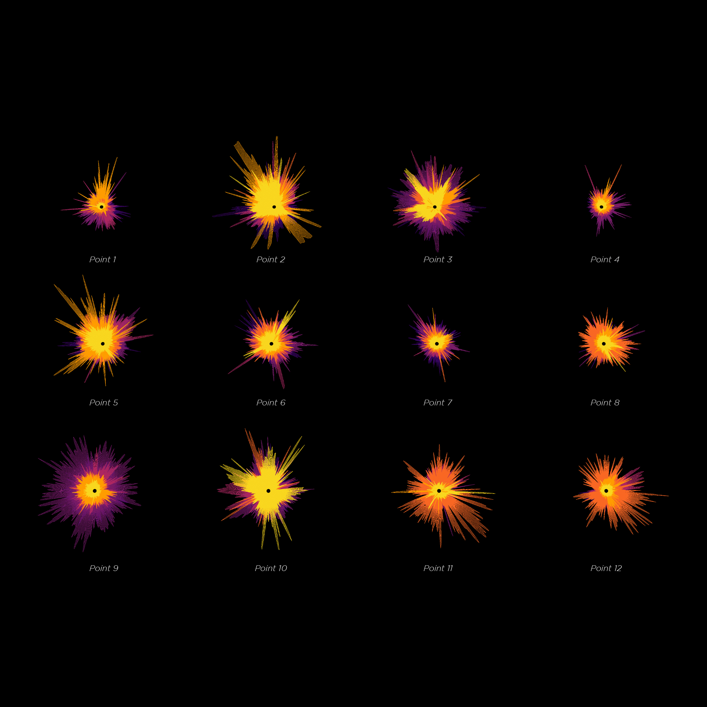

This project is the first to introduce a carbon-pollution-heat synergy index and refine the research scale to the block level.
By constructing a multimodal dataset for deep learning, it extracts key variables and patterns from complex data,
analyzing the factors influencing the carbon-pollution synergy effect to achieve more accurate predictions.
The notion of Linguistic Landscapes was first
explored in Soho, with methods that included language
and image recognition through machine learning. The
final proposal explores the reorganisation of Chinatown
as an augmented urban experience in Canary Wharf,
exploring the making of a large-scale network of Chinese
follies built from the visual and spatial archive of the
original Chinatown on the basis of long-term strategies
of feedback accumulation and speech recognition.
We utilize agent-based metaheuristic optimization techniques for path simulation.
This approach involves interactions between various types of crowd agents and the environment,
analysis of attractive and unattractive areas, and shortest path analysis.
It serves as a guiding mechanism for finding the optimal solution to optimization problems in the design field,
resulting in a coherent and functional global solution.
We utilize wearable sensors to collect sound and image data from targeted locations within the city.
By building a Sound Cognition Model, we classify the captured sounds into specific categories.
These categorized sounds are then integrated into a User Experience System, where users can
trigger specific urban sound categories to generate virtual experiences of the city.
This process visualizes the perception of the city's soundscape, offering a novel way to experience urban environments.


{kind=link}
{kind=link}
{kind=link}
{kind=link}
{kind=link}
{kind=link}
{kind=link}
{kind=link}
{kind=link}